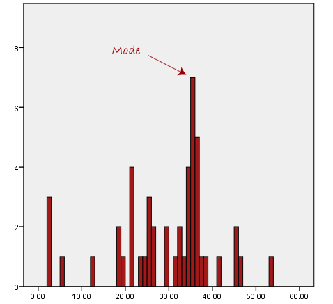
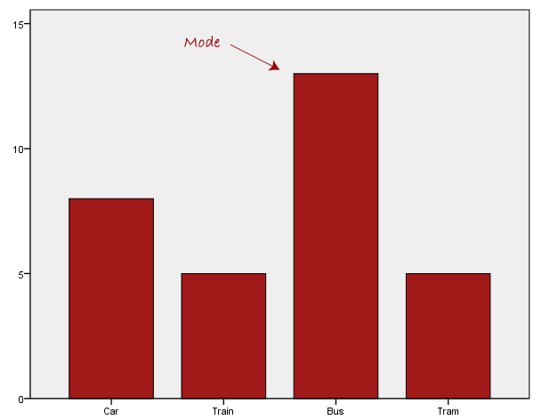
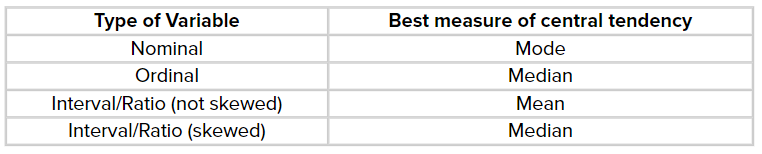

MEASURE OF CENTRAL TENDENCY
Instructional Material
INTRODUCTION
Often in statistics, we tend to represent a set of data by a representative value which would approximately define the entire collection. This representative value is called the measure of central tendency, and the name suggests that it is a value around which the data is centred. These central tendencies are mean, median and mode.
A measure of central tendency is a single value that attempts to describe a set of data by identifying the central position within that set of data. As such, measures of central tendency are sometimes called measures of central location. Measures of central tendency are a key way to discuss and communicate with graphs. The term central tendency refers to the middle, or typical, value of a set of data, which is most commonly measured by using the three m’s: mean, median, and mode. The mean, median, and mode are known as the measures of central tendency. They are also classed as summary statistics. The mean (often called the average) is most likely the measure of central tendency that you are most familiar with, but there are others, such as the median and the mode. The mean, median and mode are all valid measures of central tendency, but under different conditions, some measures of central tendency become more appropriate to use than others.
MEAN (Arithmetic)
The mean or average is the most popular and well known measure of central tendency. It can be used with both discrete and continuous data, although its use is most often with continuous data . The mean is equal to the sum of all the values in the data set divided by the number of values in the data set.
\[ \frac{1}{n} \sum_{i=i}^{n} x_{i} \]
This formula is usually written in a slightly different manner using the Greek capitol letter, \(\sum\) , pronounced “sigma”, which means “sum of…”:
\[x̄= \frac {\sum x }{n}\] Example:
\(Kalief's \ scores\ on \ his\ first \ four\ History \ tests\ were\ 80\ , 85\ , 88\ and\ 95.\) \(n = 4\)
Solution: \[x̄= \frac {\sum x }{n}\] \[x̄= \frac {80+85+88+95 }{4}\] \[x̄=\frac{348}{4}\] \[\ Mean\ x\ =\ 87\]
NOTE: The mean is essentially a model of your data set. It is the value that is most common. An important property of the mean is that it includes every value in your data set as part of the calculation. In addition, the mean is the only measure of central tendency where the sum of the deviations of each value from the mean is always zero.
MEDIAN
The median is the middle score for a set of data that has been arranged in order of magnitude. The median is less affected by outliers and skewed data. Generally median represents the mid-value of the given set of data when arranged in a particular order. Organized data means the numbers are arranged from smallest to largest or from largest to smallest. The median for an odd number of data values is the value that divides the data into two halves. \[MD = \frac {\ n+1}{2}\]
Example: \[65\ \ 55\ \ 89\ \ 56\ \ 35\ \ 14\ \ 56\ \ 55\ \ 87\ \ 45\ \ 92\] First rearrange the data into order of magnitude (smallest first): \[\ \ 14\ \ 35 \ \ 45\ \ 55\ \ 55\ \ 56\ \ 56\ \ 65\ \ 87\ \ 89 \ \ 92\] The median mark is the middle mark which is 56.
MODE
The mode is the most frequent score in our data set. On a histogram it represents the highest bar in a bar chart or histogram. Sometimes consider the mode as being the most popular option
  \(The\ most\ common\ form\ of\ transport\ , \ in \ this \ particular \ data \ set\ , \ is \ the \ bus.\)
NOTE: If two or more values appear with the same frequency, each is a mode. The downside to using the mode as a measure of central tendency is that a set of data may have no mode, or it may have more than one mode. However, the same set of data will have only one mean and only one median.
SUMMARY OF WHEN TO USE MEAN, MEDIAN, AND MODE

The three averages are:
The “mean” is the “average” you’re used to, where you add up all the numbers and then divide by the number of numbers.
The “median” is the “middle” value in the list of numbers. To find the median, your numbers have to be listed in numerical order from smallest to largest, so you may have to rewrite your list before you can find the median.
The “mode” is the value that occurs most often. If no number in the list is repeated, then there is no mode for the list.